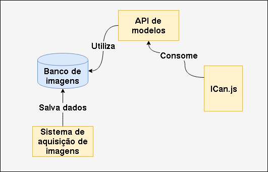

Esta biblioteca é um pequeno protótipo criado a partir de meu trabalho de graduação, que buscou criar recursos assistivos aplicando técnicas de Deep Learning. E aqui está um pequeno descritivo de sua estrutura e funcionamento.
A estrutura do projeto é bastante simples, e enquanto estava sendo desenvolvida tentou se tornar o mais amigável possível de ser utilizada. Basicamente o projeto é dividido em duas partes Core e Common, onde o Core representa as funcionalidades de "baixo nível" da aplicação, ou seja, as instâncias dos modelos de redes neurais, bem como as equações aplicadas no projeto. E o Common é justamente as funcionalidades do Core da biblioteca unidos com o P5.js aplicado em diferentes problemas sendo eles:
Esta aplicação busca permitir o controle dos movimentos em um website através de gestos da cabeça
Esta outra aplicação permite a escrita de textos através de gestos de Libras (Infelizmente há poucas palavras disponíveis)
Para utilizar o ICan.js será necessário apenas baixar o arquivo da biblioteca aqui e importar em seu HTML, como demonstrado abaixo:
<script src="icjs.js"></script>
Para demonstração do funcionamento da biblioteca há alguns exemplos criados, sendo eles:
O ICan.js é um projeto que possui um pequeno ecossistema que acabou sendo desenvolvido durante a implementação da biblioteca. Através do diagrama abaixo é possível visualizar este ecossistema.
Todos os recursos apresentados no diagrama acima serão disponibilizados na página do projeto no Gitlab.
Para acessar a documentação clique aqui. Caso queira colaborar com a documentação será bem legal, para isto abra uma issue no repositório do projeto